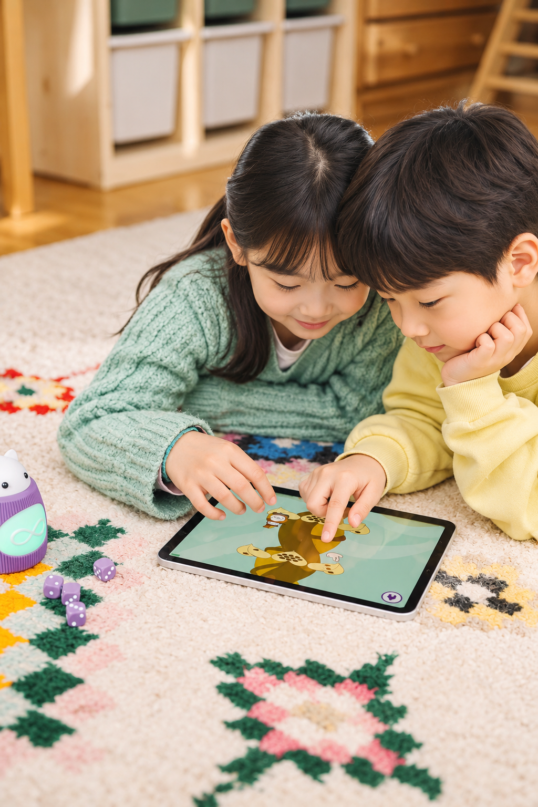

LUUP 기록


1
루틴, 성취
오늘의 성취
매일 1분, 아이의 하루
작은 기록이 모여
아이의 성장 이야기가 돼요.
이번 주와 지난주 비교
- 이번 주 기록한 날
- 연속
-
루틴 수행 기록
오늘
-
감정 기록
-
집중도 기록
오늘 집중도
-
기타메모
오늘 메모
매일 1분
아이의 하루
기록 2026
-
루틴 유형 진단
-
1단계이름 입력 결과에서 불러드릴 이름이나 닉네임을 알려주세요.
-

2단계O, X 질문 5개 평소 생활과 가까운 쪽을 편하게 골라 주세요. 약 1분이면 끝나요.
-

3단계유형과 추천 루틴 나의 루틴 유형과 지금 바로 시작할 루틴 3개를 알려드려요.
-

4단계오늘부터 시작 추천 루틴을 그대로 담아 오늘의 루틴으로 바로 이어가요.